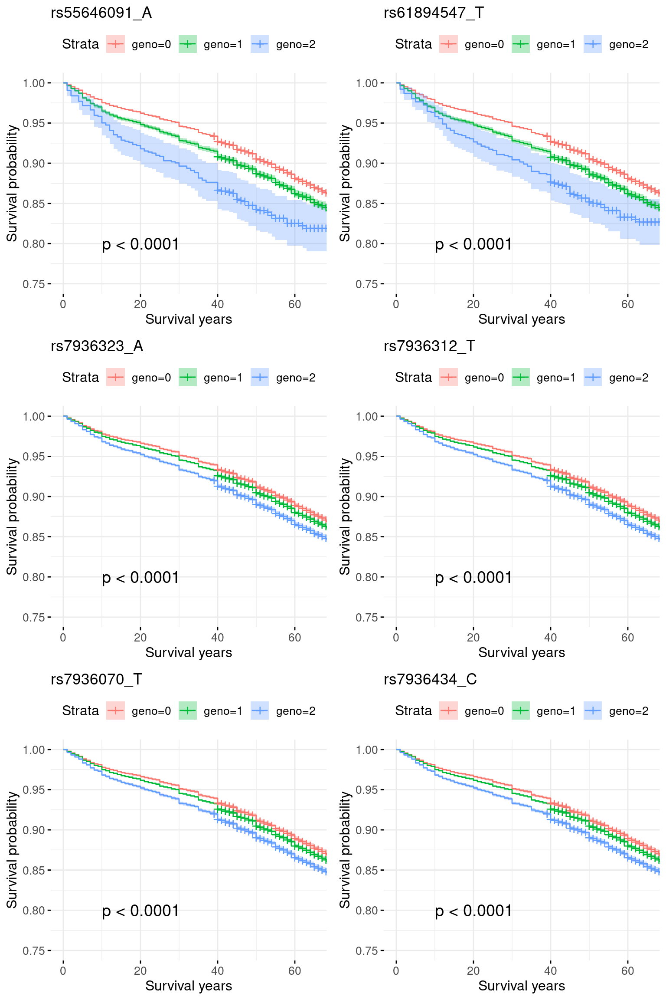
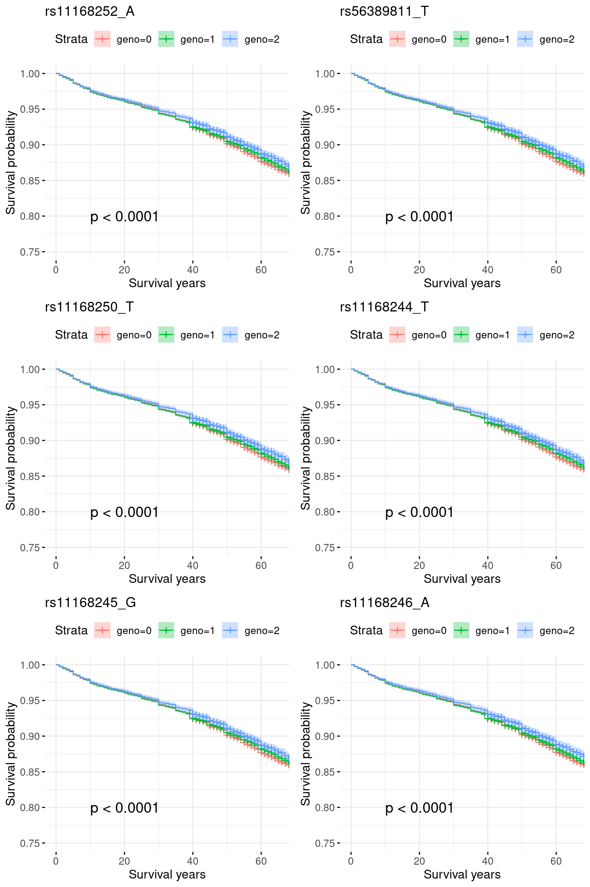
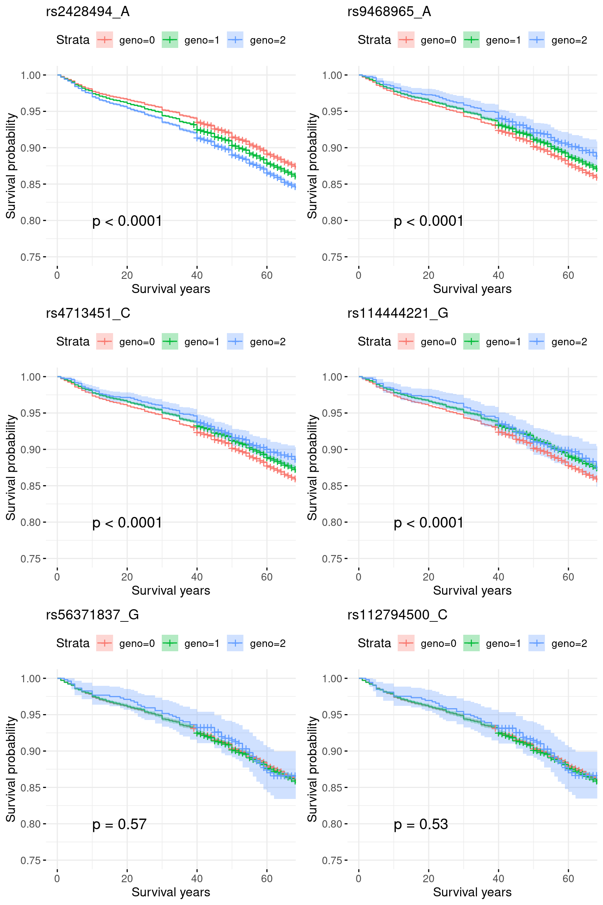
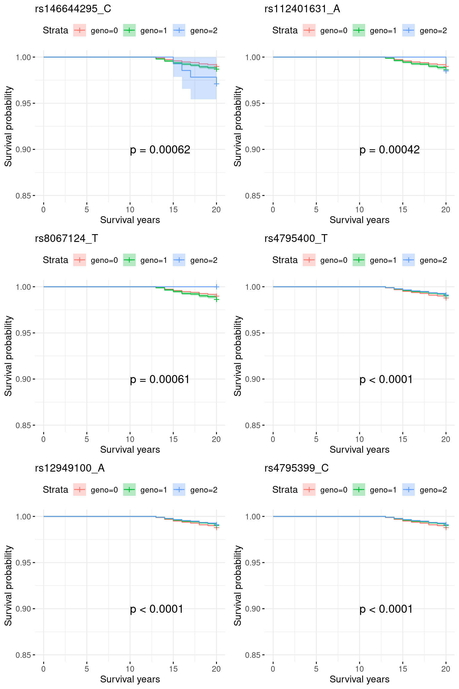

Kaplan meier plots
2024-06-24
Last updated: 2024-07-01
Checks: 7 0
Knit directory: survival-data-analysis/
This reproducible R Markdown analysis was created with workflowr (version 1.7.0). The Checks tab describes the reproducibility checks that were applied when the results were created. The Past versions tab lists the development history.
Great! Since the R Markdown file has been committed to the Git repository, you know the exact version of the code that produced these results.
Great job! The global environment was empty. Objects defined in the global environment can affect the analysis in your R Markdown file in unknown ways. For reproduciblity it’s best to always run the code in an empty environment.
The command set.seed(20240324) was run prior to running
the code in the R Markdown file. Setting a seed ensures that any results
that rely on randomness, e.g. subsampling or permutations, are
reproducible.
Great job! Recording the operating system, R version, and package versions is critical for reproducibility.
Nice! There were no cached chunks for this analysis, so you can be confident that you successfully produced the results during this run.
Great job! Using relative paths to the files within your workflowr project makes it easier to run your code on other machines.
Great! You are using Git for version control. Tracking code development and connecting the code version to the results is critical for reproducibility.
The results in this page were generated with repository version 1e1dddf. See the Past versions tab to see a history of the changes made to the R Markdown and HTML files.
Note that you need to be careful to ensure that all relevant files for
the analysis have been committed to Git prior to generating the results
(you can use wflow_publish or
wflow_git_commit). workflowr only checks the R Markdown
file, but you know if there are other scripts or data files that it
depends on. Below is the status of the Git repository when the results
were generated:
Ignored files:
Ignored: .Rhistory
Ignored: .Rproj.user/
Ignored: analysis/figure/
Ignored: analysis/site_libs/
Note that any generated files, e.g. HTML, png, CSS, etc., are not included in this status report because it is ok for generated content to have uncommitted changes.
These are the previous versions of the repository in which changes were
made to the R Markdown (analysis/plot_km.Rmd) and HTML
(docs/plot_km.html) files. If you’ve configured a remote
Git repository (see ?wflow_git_remote), click on the
hyperlinks in the table below to view the files as they were in that
past version.
| File | Version | Author | Date | Message |
|---|---|---|---|---|
| Rmd | 1e1dddf | yunqi yang | 2024-07-01 | wflow_publish("analysis/plot_km.Rmd") |
| html | b8b24e9 | yunqi yang | 2024-06-28 | Build site. |
| Rmd | 00fbcd9 | yunqi yang | 2024-06-28 | wflow_publish("analysis/plot_km.Rmd") |
| html | 2500dc6 | yunqi yang | 2024-06-25 | Build site. |
| Rmd | bce6d66 | yunqi yang | 2024-06-25 | wflow_publish("analysis/plot_km.Rmd") |
| html | 83f40c7 | yunqi yang | 2024-06-24 | Build site. |
| Rmd | a9b2bd9 | yunqi yang | 2024-06-24 | wflow_publish("analysis/plot_km.Rmd") |
library(survival)
library(survminer)Loading required package: ggplot2Loading required package: ggpubr
Attaching package: 'survminer'The following object is masked from 'package:survival':
myelomalibrary(susieR)
library(dplyr)
Attaching package: 'dplyr'The following objects are masked from 'package:stats':
filter, lagThe following objects are masked from 'package:base':
intersect, setdiff, setequal, unionlibrary(gridExtra)
Attaching package: 'gridExtra'The following object is masked from 'package:dplyr':
combinedevtools::load_all("/project2/mstephens/yunqiyang/surv-susie/logisticsusie")ℹ Loading logisticsusie1. Region chr11_75500001_77400000: COA pvalue = 1e-30, AOA pvalue = 1e-10.
region = "chr11_75500001_77400000"
res = readRDS(paste0("/project2/mstephens/yunqiyang/surv-susie/realdata/self_report_asthma/result/all/fit.susie.", region, ".rds"))
gwas = readRDS(paste0("/project2/mstephens/yunqiyang/surv-susie/realdata/self_report_asthma/gwas_surv/all_gwas_", region, ".rds"))
pheno = readRDS("/project2/mstephens/yunqiyang/surv-susie/realdata/self_report_asthma/surv_all_asthma.rds")fit = res[[1]]
X = res[[2]]
effect_estimate <- data.frame(cbind(colnames(X),
colSums(fit$alpha * fit$mu)))
colnames(effect_estimate) = c("SNP", "effect")
effect_estimate$effect = as.numeric(effect_estimate$effect)
gwas = data.frame(gwas)
gwas$SNP = rownames(gwas)
res = merge(effect_estimate, gwas, by = "SNP")res.sorted <- res %>% arrange(desc(abs(effect)), p.value.spa)
res.sorted[1:6, ] SNP effect MAF missing.rate p.value.spa p.value.norm
1 rs55646091_A 0.078817939 0.05086819 0 5.110427e-25 9.672793e-26
2 rs61894547_T 0.044914244 0.05155540 0 3.916273e-24 8.543620e-25
3 rs7936323_A 0.019238185 0.47659499 0 1.070192e-37 1.033056e-37
4 rs7936312_T 0.016654340 0.47661661 0 1.251399e-37 1.208159e-37
5 rs7936070_T 0.014189396 0.47669712 0 1.503789e-37 1.452115e-37
6 rs7936434_C 0.009538595 0.47688517 0 2.342714e-37 2.263324e-37
Stat Var z
1 572.9645 2983.742 10.48931
2 570.9379 3083.681 10.28145
3 1615.2043 15834.626 12.83582
4 1613.8898 15838.788 12.82369
5 1612.0648 15838.203 12.80942
6 1607.7404 15838.510 12.77494pheno <- pheno[order(pheno$IID), ]snp_list = res.sorted$SNP[1:6]
plots = list()
for (i in 1:length(snp_list)){
indx = which(colnames(X) == snp_list[i])
# round genotype to 0, 1, 2
geno <- cut(X[, indx], breaks = c(-Inf, 0.5, 1.5, Inf), labels = c(0, 1, 2), right = FALSE)
geno <- as.numeric(as.character(geno))
data <- data.frame(time = pheno$time,
status = pheno$event,
geno = geno)
# create survival pheno
y <- Surv(pheno$time, pheno$event)
# fit model by different geno group
fit <- survfit(y ~ data$geno)
plots[[i]] <- ggsurvplot(fit, data = data,
pval = TRUE,
conf.int = TRUE,
risk.table = TRUE,
lwd = 0.5,
ylim = c(0.75, 1),
xlim = c(0, 65),
pval.coord = c(10, 0.8),
xlab = "Survival years",
ylab = "Survival probability",
title = snp_list[i],
ggtheme = theme_minimal() + theme(legend.text = element_text(size = 10), # Adjust legend text size
legend.title = element_text(size = 12), # Adjust legend title size
axis.text = element_text(size = 10), # Adjust axis text size
axis.title = element_text(size = 12), # Adjust axis title size
strip.text = element_text(size = 10)), # Adjust strip text size
risk.table.fontsize = 2.5
)
}# Arrange the plots in a grid layout
grid.arrange(grobs = lapply(plots, function(x) x$plot), ncol = 2)
| Version | Author | Date |
|---|---|---|
| 83f40c7 | yunqi yang | 2024-06-24 |
2. Region chr12_46000001_48700000: No GWAS significant signal for COA, marginal significant for AOA.
region = "chr12_46000001_48700000"
res = readRDS(paste0("/project2/mstephens/yunqiyang/surv-susie/realdata/self_report_asthma/result/all/fit.susie.", region, ".rds"))
gwas = readRDS(paste0("/project2/mstephens/yunqiyang/surv-susie/realdata/self_report_asthma/gwas_surv/all_gwas_", region, ".rds"))
pheno = readRDS("/project2/mstephens/yunqiyang/surv-susie/realdata/self_report_asthma/surv_all_asthma.rds")fit = res[[1]]
X = res[[2]]
effect_estimate <- data.frame(cbind(colnames(X),
colSums(fit$alpha * fit$mu)))
colnames(effect_estimate) = c("SNP", "effect")
effect_estimate$effect = as.numeric(effect_estimate$effect)
gwas = data.frame(gwas)
gwas$SNP = rownames(gwas)
res = merge(effect_estimate, gwas, by = "SNP")res.sorted <- res %>% arrange(desc(abs(effect)), p.value.spa)
res.sorted[1:6, ] SNP effect MAF missing.rate p.value.spa p.value.norm
1 rs11168252_A -0.006449541 0.2392817 0 1.487361e-06 1.483869e-06
2 rs56389811_T -0.006110153 0.2388950 0 1.582839e-06 1.579167e-06
3 rs11168250_T -0.005340826 0.2389935 0 1.855563e-06 1.851454e-06
4 rs11168244_T -0.004894118 0.2389606 0 1.990153e-06 1.985810e-06
5 rs11168245_G -0.004851431 0.2391498 0 2.019029e-06 2.014648e-06
6 rs11168246_A -0.002366053 0.2092597 0 5.684105e-06 5.672996e-06
Stat Var z
1 -515.7744 11481.97 -4.813396
2 -515.1776 11514.90 -4.800947
3 -512.4009 11544.25 -4.768997
4 -510.1971 11513.30 -4.754863
5 -510.1121 11523.58 -4.751949
6 -443.6812 9558.07 -4.538224pheno <- pheno[order(pheno$IID), ]snp_list = res.sorted$SNP[1:6]
plots = list()
for (i in 1:length(snp_list)){
indx = which(colnames(X) == snp_list[i])
# round genotype to 0, 1, 2
geno <- cut(X[, indx], breaks = c(-Inf, 0.5, 1.5, Inf), labels = c(0, 1, 2), right = FALSE)
geno <- as.numeric(as.character(geno))
data <- data.frame(time = pheno$time,
status = pheno$event,
geno = geno)
# create survival pheno
y <- Surv(pheno$time, pheno$event)
# fit model by different geno group
fit <- survfit(y ~ data$geno)
plots[[i]] <- ggsurvplot(fit, data = data,
pval = TRUE,
conf.int = TRUE,
risk.table = TRUE,
lwd = 0.5,
ylim = c(0.75, 1),
xlim = c(0, 65),
pval.coord = c(10, 0.8),
xlab = "Survival years",
ylab = "Survival probability",
title = snp_list[i],
ggtheme = theme_minimal() + theme(legend.text = element_text(size = 10), # Adjust legend text size
legend.title = element_text(size = 12), # Adjust legend title size
axis.text = element_text(size = 10), # Adjust axis text size
axis.title = element_text(size = 12), # Adjust axis title size
strip.text = element_text(size = 10)), # Adjust strip text size
risk.table.fontsize = 2.5
)
}# Arrange the plots in a grid layout
grid.arrange(grobs = lapply(plots, function(x) x$plot), ncol = 2)
| Version | Author | Date |
|---|---|---|
| 83f40c7 | yunqi yang | 2024-06-24 |
3. Region chr17_33500001_39800000: COA pval = 1e-80, very week signals for AOA.
region = "chr17_33500001_39800000"
res = readRDS(paste0("/project2/mstephens/yunqiyang/surv-susie/realdata/self_report_asthma/result/all/fit.susie.", region, ".rds"))
gwas = readRDS(paste0("/project2/mstephens/yunqiyang/surv-susie/realdata/self_report_asthma/gwas_surv/all_gwas_", region, ".rds"))
pheno = readRDS("/project2/mstephens/yunqiyang/surv-susie/realdata/self_report_asthma/surv_all_asthma.rds")fit = res[[1]]
X = res[[2]]
effect_estimate <- data.frame(cbind(colnames(X),
colSums(fit$alpha * fit$mu)))
colnames(effect_estimate) = c("SNP", "effect")
effect_estimate$effect = as.numeric(effect_estimate$effect)
gwas = data.frame(gwas)
gwas$SNP = rownames(gwas)
res = merge(effect_estimate, gwas, by = "SNP")res.sorted <- res %>% arrange(desc(abs(effect)), p.value.spa)
res.sorted[1:6, ] SNP effect MAF missing.rate p.value.spa p.value.norm
1 rs146644295_C 0.10445301 0.02227598 0 1.509883e-10 1.103519e-10
2 rs112401631_A 0.10380779 0.02299226 0 3.594625e-10 2.742929e-10
3 rs8067124_T 0.04710491 0.02203134 0 1.540705e-09 1.236998e-09
4 rs4795400_T -0.01190853 0.47122553 0 7.079374e-36 6.843430e-36
5 rs12949100_A -0.01050079 0.47093228 0 7.665040e-36 7.409160e-36
6 rs4795399_C -0.01007555 0.47121659 0 8.096519e-36 7.827701e-36
Stat Var z
1 233.3248 1307.758 6.452043
2 227.7786 1301.973 6.312653
3 200.3148 1087.127 6.075373
4 -1573.4716 15827.696 -12.506911
5 -1572.9638 15833.460 -12.500598
6 -1573.0299 15845.867 -12.496229pheno <- pheno[order(pheno$IID), ]snp_list = res.sorted$SNP[1:6]
plots = list()
for (i in 1:length(snp_list)){
indx = which(colnames(X) == snp_list[i])
# round genotype to 0, 1, 2
geno <- cut(X[, indx], breaks = c(-Inf, 0.5, 1.5, Inf), labels = c(0, 1, 2), right = FALSE)
geno <- as.numeric(as.character(geno))
data <- data.frame(time = pheno$time,
status = pheno$event,
geno = geno)
# create survival pheno
y <- Surv(pheno$time, pheno$event)
# fit model by different geno group
fit <- survfit(y ~ data$geno)
plots[[i]] <- ggsurvplot(fit, data = data,
pval = TRUE,
conf.int = TRUE,
risk.table = TRUE,
lwd = 0.5,
ylim = c(0.75, 1),
xlim = c(0, 65),
pval.coord = c(10, 0.8),
xlab = "Survival years",
ylab = "Survival probability",
title = snp_list[i],
ggtheme = theme_minimal() + theme(legend.text = element_text(size = 10), # Adjust legend text size
legend.title = element_text(size = 12), # Adjust legend title size
axis.text = element_text(size = 10), # Adjust axis text size
axis.title = element_text(size = 12), # Adjust axis title size
strip.text = element_text(size = 10)), # Adjust strip text size
risk.table.fontsize = 2.5
)
}# Arrange the plots in a grid layout
grid.arrange(grobs = lapply(plots, function(x) x$plot), ncol = 2)Warning: Removed 5 rows containing missing values or values outside the scale range
(`geom_step()`).Warning: Removed 4 rows containing missing values or values outside the scale range
(`geom_point()`).Warning: Removed 4 rows containing missing values or values outside the scale range
(`geom_step()`).Warning: Removed 2 rows containing missing values or values outside the scale range
(`geom_point()`).
| Version | Author | Date |
|---|---|---|
| 83f40c7 | yunqi yang | 2024-06-24 |
3.1 Re-analyze chr17_33500001_39800000: excluding 0-12 onset
indx.remove = which(pheno$event == 1 & pheno$time <= 12)
pheno.sub = pheno[-indx.remove, ]
indx.censor = c(which(pheno.sub$event == 1 & pheno.sub$time > 20), which(pheno.sub$event == 0))
pheno.sub$event[indx.censor] = 0
pheno.sub$time[indx.censor] = 20
sum(pheno.sub$event == 1)[1] 2710X.sub = X[-indx.remove, ]plots = list()
for (i in 1:length(snp_list)){
indx = which(colnames(X.sub) == snp_list[i])
# round genotype to 0, 1, 2
geno <- cut(X.sub[, indx], breaks = c(-Inf, 0.5, 1.5, Inf), labels = c(0, 1, 2), right = FALSE)
geno <- as.numeric(as.character(geno))
data <- data.frame(time = pheno.sub$time,
status = pheno.sub$event,
geno = geno)
# create survival pheno
y <- Surv(data$time, data$status)
# fit model by different geno group
fit <- survfit(y ~ data$geno)
plots[[i]] <- ggsurvplot(fit, data = data,
pval = TRUE,
conf.int = TRUE,
risk.table = TRUE,
lwd = 0.5,
ylim = c(0.85, 1),
xlim = c(0, 20),
pval.coord = c(10, 0.9),
xlab = "Survival years",
ylab = "Survival probability",
title = snp_list[i],
ggtheme = theme_minimal() + theme(legend.text = element_text(size = 10), # Adjust legend text size
legend.title = element_text(size = 12), # Adjust legend title size
axis.text = element_text(size = 10), # Adjust axis text size
axis.title = element_text(size = 12), # Adjust axis title size
strip.text = element_text(size = 10)), # Adjust strip text size
risk.table.fontsize = 2.5
)
}# Arrange the plots in a grid layout
grid.arrange(grobs = lapply(plots, function(x) x$plot), ncol = 2)
rm(res)4. Region chr6_30500001_32100000: Both very significant signals for AOA and COA, pval = 1e-20.
A shared signal at rs2428494_A.
region = "chr6_30500001_32100000"
res = readRDS(paste0("/project2/mstephens/yunqiyang/surv-susie/realdata/self_report_asthma/result/all/fit.susie.", region, ".rds"))
gwas = readRDS(paste0("/project2/mstephens/yunqiyang/surv-susie/realdata/self_report_asthma/gwas_surv/all_gwas_", region, ".rds"))
pheno = readRDS("/project2/mstephens/yunqiyang/surv-susie/realdata/self_report_asthma/surv_all_asthma.rds")fit = res[[1]]
X = res[[2]]
effect_estimate <- data.frame(cbind(colnames(X),
colSums(fit$alpha * fit$mu)))
colnames(effect_estimate) = c("SNP", "effect")
effect_estimate$effect = as.numeric(effect_estimate$effect)
gwas = data.frame(gwas)
gwas$SNP = rownames(gwas)
res = merge(effect_estimate, gwas, by = "SNP")res.sorted <- res %>% arrange(desc(abs(effect)), p.value.spa)
res.sorted[1:6, ] SNP effect MAF missing.rate p.value.spa p.value.norm
1 rs2428494_A 0.114184536 0.47708452 0 2.359694e-51 2.196762e-51
2 rs9468965_A -0.039160929 0.07710370 0 1.821596e-13 1.512565e-13
3 rs4713451_C -0.031857500 0.08872864 0 3.316825e-13 2.852047e-13
4 rs114444221_G -0.005150370 0.06422248 0 2.759637e-12 2.328671e-12
5 rs56371837_G 0.004331622 0.04397674 0 2.200153e-01 2.200153e-01
6 rs112794500_C 0.003789191 0.04435509 0 2.213493e-01 2.213493e-01
Stat Var z
1 1894.94394 15790.544 15.079877
2 -457.44138 3835.717 -7.386049
3 -522.96946 5130.548 -7.301204
4 -375.73468 2870.289 -7.013237
5 63.11993 2648.542 1.226487
6 63.39877 2687.483 1.222948pheno <- pheno[order(pheno$IID), ]snp_list = res.sorted$SNP[1:6]
plots = list()
for (i in 1:length(snp_list)){
indx = which(colnames(X) == snp_list[i])
# round genotype to 0, 1, 2
geno <- cut(X[, indx], breaks = c(-Inf, 0.5, 1.5, Inf), labels = c(0, 1, 2), right = FALSE)
geno <- as.numeric(as.character(geno))
data <- data.frame(time = pheno$time,
status = pheno$event,
geno = geno)
# create survival pheno
y <- Surv(pheno$time, pheno$event)
# fit model by different geno group
fit <- survfit(y ~ data$geno)
plots[[i]] <- ggsurvplot(fit, data = data,
pval = TRUE,
conf.int = TRUE,
risk.table = TRUE,
lwd = 0.5,
ylim = c(0.75, 1),
xlim = c(0, 65),
pval.coord = c(10, 0.8),
xlab = "Survival years",
ylab = "Survival probability",
title = snp_list[i],
ggtheme = theme_minimal() + theme(legend.text = element_text(size = 10), # Adjust legend text size
legend.title = element_text(size = 12), # Adjust legend title size
axis.text = element_text(size = 10), # Adjust axis text size
axis.title = element_text(size = 12), # Adjust axis title size
strip.text = element_text(size = 10)), # Adjust strip text size
risk.table.fontsize = 2.5
)
}# Arrange the plots in a grid layout
grid.arrange(grobs = lapply(plots, function(x) x$plot), ncol = 2)
sessionInfo()R version 4.2.0 (2022-04-22)
Platform: x86_64-pc-linux-gnu (64-bit)
Running under: CentOS Linux 7 (Core)
Matrix products: default
BLAS/LAPACK: /software/openblas-0.3.13-el7-x86_64/lib/libopenblas_haswellp-r0.3.13.so
locale:
[1] LC_CTYPE=en_US.UTF-8 LC_NUMERIC=C LC_TIME=C
[4] LC_COLLATE=C LC_MONETARY=C LC_MESSAGES=C
[7] LC_PAPER=C LC_NAME=C LC_ADDRESS=C
[10] LC_TELEPHONE=C LC_MEASUREMENT=C LC_IDENTIFICATION=C
attached base packages:
[1] stats graphics grDevices utils datasets methods base
other attached packages:
[1] logisticsusie_0.0.0.9004 testthat_3.1.4 gridExtra_2.3
[4] dplyr_1.1.4 susieR_0.12.35 survminer_0.4.9
[7] ggpubr_0.6.0 ggplot2_3.5.1 survival_3.3-1
[10] workflowr_1.7.0
loaded via a namespace (and not attached):
[1] ggtext_0.1.2 matrixStats_0.62.0 fs_1.5.2 usethis_2.1.5
[5] devtools_2.4.3 httr_1.4.3 rprojroot_2.0.3 tools_4.2.0
[9] backports_1.4.1 bslib_0.3.1 utf8_1.2.2 R6_2.5.1
[13] irlba_2.3.5 colorspace_2.0-3 withr_2.5.0 tidyselect_1.2.1
[17] prettyunits_1.1.1 processx_3.8.0 compiler_4.2.0 git2r_0.30.1
[21] cli_3.6.2 xml2_1.3.3 desc_1.4.1 labeling_0.4.2
[25] sass_0.4.1 scales_1.3.0 survMisc_0.5.6 callr_3.7.3
[29] mixsqp_0.3-48 stringr_1.5.1 digest_0.6.29 rmarkdown_2.14
[33] pkgconfig_2.0.3 htmltools_0.5.2 sessioninfo_1.2.2 highr_0.9
[37] fastmap_1.1.0 rlang_1.1.3 rstudioapi_0.13 jquerylib_0.1.4
[41] generics_0.1.2 farver_2.1.0 zoo_1.8-10 jsonlite_1.8.0
[45] car_3.1-1 magrittr_2.0.3 Matrix_1.5-3 Rcpp_1.0.12
[49] munsell_0.5.0 fansi_1.0.3 abind_1.4-5 lifecycle_1.0.4
[53] stringi_1.7.6 whisker_0.4 yaml_2.3.5 carData_3.0-5
[57] brio_1.1.3 pkgbuild_1.3.1 plyr_1.8.7 grid_4.2.0
[61] promises_1.2.0.1 crayon_1.5.1 lattice_0.20-45 splines_4.2.0
[65] gridtext_0.1.5 knitr_1.39 ps_1.7.0 pillar_1.9.0
[69] ggsignif_0.6.3 pkgload_1.2.4 glue_1.6.2 evaluate_0.15
[73] getPass_0.2-2 data.table_1.14.2 remotes_2.4.2.1 vctrs_0.6.5
[77] httpuv_1.6.5 gtable_0.3.0 purrr_1.0.2 tidyr_1.3.1
[81] reshape_0.8.9 km.ci_0.5-6 cachem_1.0.6 xfun_0.30
[85] xtable_1.8-4 broom_0.8.0 rstatix_0.7.2 later_1.3.0
[89] tibble_3.2.1 memoise_2.0.1 KMsurv_0.1-5 ellipsis_0.3.2